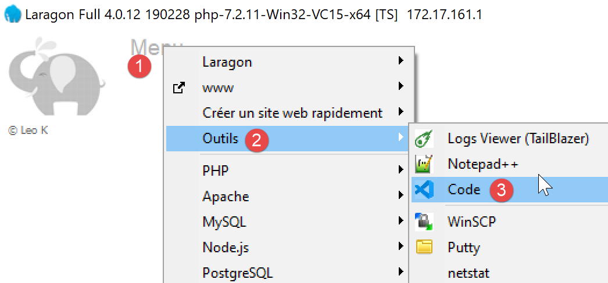
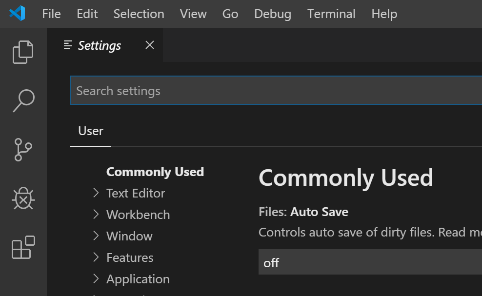
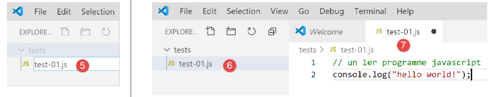
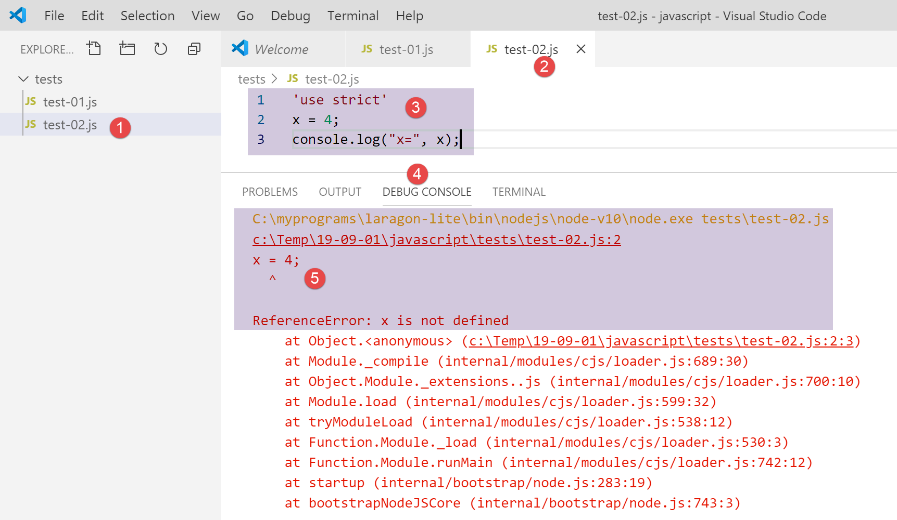
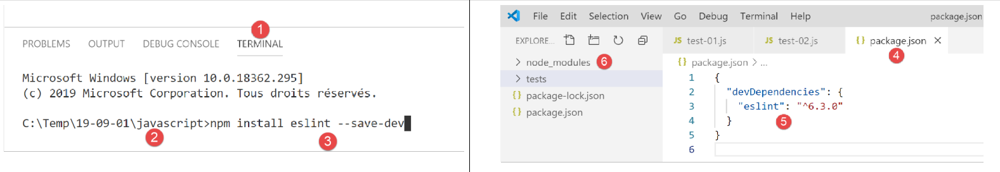
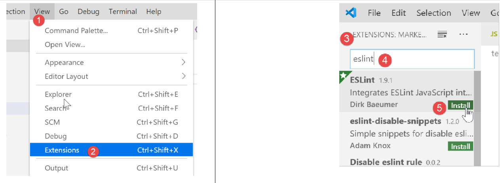
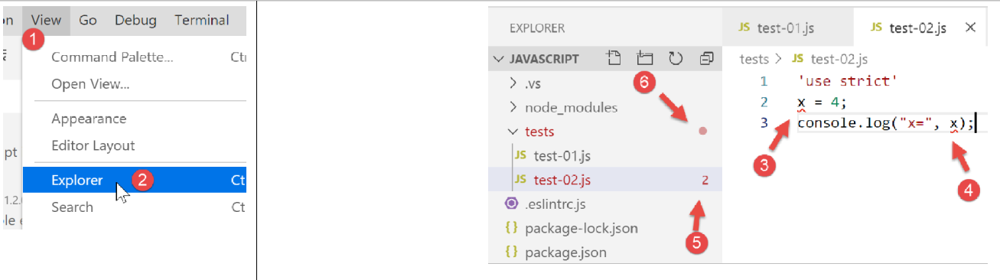
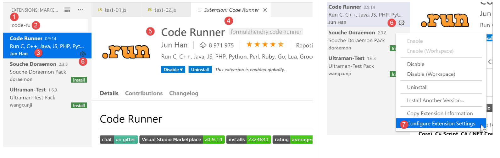
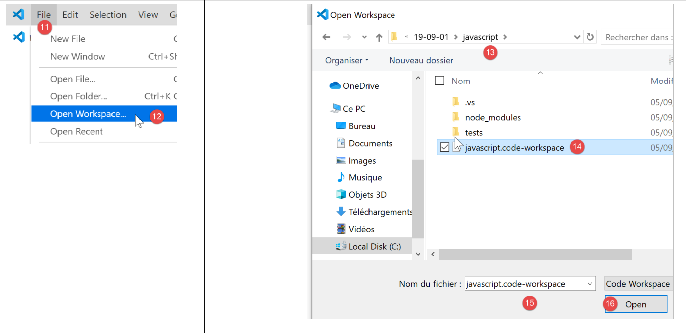

2. Een werkomgeving installeren
We gaan de volgende tools gebruiken (onder Windows 10 x 64-bits):
- [Laragon] om de webserver PHP uit te voeren;
- [Netbeans] om de code PHP te bewerken;
- [Visual Studio Code] om de JavaScript-codes te schrijven;
- [node.js] om deze uit te voeren;
- [npm] om de JavaScript-bibliotheken te downloaden en te installeren die we nodig hebben;
2.1. Werkomgeving voor de webserver
De scripts PHP zijn geschreven en getest in de volgende omgeving:
- een Apache-webserveromgeving / SGBD MySQL / PHP 7.3 genaamd Laragon;
- de NetBeans 10.0-ontwikkelomgeving IDE;
2.1.1. Installatie van Laragon
Laragon is een pakket dat verschillende programma’s bevat:
- een Apache-webserver. Deze zullen we gebruiken voor het schrijven van webscripts in PHP;
- de SGBD MySQL;
- de scripttaal PHP;
- een Redis-server die een cache voor webapplicaties implementeert:
Laragon kan (maart 2019) worden gedownload via het volgende adres:


- De installatie [1-5] leidt tot de volgende boomstructuur:

- in [6] de installatiemap van PHP;
Bij het starten van [Laragon] verschijnt het volgende venster:

- [1]: het hoofdmenu van Laragon;
- [2]: de knop [Start All] start de Apache-webserver en de SGBD MySQL;
- [3]: de knop [WEB] geeft de webpagina [http://localhost] weer, die overeenkomt met het bestand PHP [<laragon>/www/index.php], waarbij <laragon> de installatiemap van Laragon is;
- [4]: met de knop [Database] kunt u SGBD en MySQL beheren met de tool [phpMyAdmin]. Deze moet eerst worden geïnstalleerd;
- [5]: de knop [Terminal] opent een opdrachtprompt;
- [6]: de knop [Root] opent Windows Verkenner, waarbij de map [<laragon>/www] is geselecteerd, de hoofdmap van de website [http://localhost]. Hier moeten alle webapplicaties worden geplaatst die door de Apache-server van Laragon worden beheerd;
Laten we een Laragon-terminal [5] openen:

- in [1], het type terminal. Er zijn drie soorten terminals beschikbaar in [6];
- in [2, 3]: de huidige map;
- in [4] voert u het commando [echo %PATH%] in, dat de lijst weergeeft van mappen die worden doorzocht bij het zoeken naar een uitvoerbaar bestand. Alle belangrijke mappen van Laragon zijn opgenomen in dit pad naar de uitvoerbare bestanden, wat niet het geval zou zijn als men een opdrachtvenster [cmd] in Windows zou openen. Wanneer in dit document opdrachten moeten worden ingevoerd om bepaalde software te installeren, gebeurt dit doorgaans in een Laragon-terminal;
2.1.2. Installatie van IDE NetBeans 10.0
IDE NetBeans 10.0 kan worden gedownload via de volgende link (maart 2019):
https://netbeans.apache.org/download/index.HTML

Het gedownloade bestand is een zip-bestand dat je gewoon hoeft uit te pakken. Zodra NetBeans is geïnstalleerd en gestart, kun je een eerste project PHP aanmaken.

- in [1], kies je de optie File / New Project;
- in [2], kies je de categorie [PHP];
- in [3], kies het projecttype [PHP Application];

- in [4], geef het project een naam;
- in [5], kies een map voor het project;
- in [6], kies de gedownloade versie van PHP;
- in [7], de codering UTF-8 voor de bestanden PHP selecteren;
- In [8] kiest u de modus [Script] om de scripts PHP in de opdrachtregelmodus uit te voeren. Kies [Local WEB Server] om een script PHP in een webomgeving uit te voeren;
- in [9,10] de installatiemap van de PHP-interpreter uit het Laragon-pakket opgeven:

- kies [Finish] om de wizard voor het aanmaken van het project PHP af te ronden;

- in [11] wordt het project aangemaakt met een script [index.php];
- in [12] wordt een minimaal script PHP geschreven;
- in [13] wordt [index.php] uitgevoerd;

- in [14] worden de resultaten weergegeven in het venster [output] van NetBeans;
- in [15] wordt een nieuw script aangemaakt;
- in [16], het nieuwe script;
De lezer kan alle volgende scripts aanmaken in verschillende mappen van hetzelfde project PHP. De broncodes van de scripts in dit document zijn beschikbaar in de vorm van de volgende NetBeans-boomstructuur:

De scripts in dit document zijn ondergebracht in de projectstructuur van het project [scripts-console] [1]. We zullen ook gebruikmaken van bibliotheken uit PHP, die worden geplaatst in de map [<laragon-lite>/www/vendor] [2], waarbij <laragon-lite> de installatiemap van de Laragon-software is. Om ervoor te zorgen dat NetBeans de bibliotheken van [2] herkent als onderdeel van het project [scripts-console], moeten we de map [vendor] [2] opnemen in de tak [Include Path] [3] van het project. We gaan NetBeans zo configureren dat de map [<laragon-lite>/www/vendor] [2] wordt opgenomen in elk nieuw project PHP en niet alleen in het project [scripts-console]:

- in [1-2] gaan we naar de opties van NetBeans;
- in [3-4], configureer je de opties van PHP;
- in [5-7] configureer je [Global Include Path] vanuit PHP: de mappen die in [7] worden vermeld, worden automatisch opgenomen in [Include Path] van elk project PHP;

- in [9] krijgt men toegang tot de eigenschappen van de branch [Include Path];
- in [10-11] worden de nieuwe bibliotheken door NetBeans gescand. NetBeans scant de code PHP van deze bibliotheken en slaat hun klassen, interfaces, functies enz. op om de ontwikkelaar hulp te kunnen bieden;

- in [12] maakt een stuk code gebruik van de klasse [PhpMimeMailParser\Parser] uit de bibliotheek [vendor/php-mime-mail-parser];
- in [13] stelt NetBeans de methoden van deze klasse voor;
- in [14-15] geeft NetBeans de documentatie van de geselecteerde methode weer;
Het begrip [Include Path] is hier specifiek voor NetBeans. PHP kent dit begrip ook, maar het gaat hier a priori om twee verschillende begrippen.
Nu de werkomgeving is geïnstalleerd, kunnen we de basisprincipes van PHP bespreken.
2.2. Werkomgeving voor JavaScript
Deze tools kunnen via Laragon worden geïnstalleerd (zie paragraaf ‘link’):

In [4] installeren we [node.js]. Zodra de installatie is voltooid, open je een Laragon-terminal (zie paragraaf ‘link’) en vraag je de versie op van de geïnstalleerde [node.js] (1) en die van [npm] (2):

Vervolgens installeren we Visual Studio Code, vaak aangeduid als [code], [VSCode] of [3-6]. Zodra dit is gebeurd, kunnen we deze ontwikkeltool starten:


2.2.1. Configuratie van Visual Studio Code
We laten nu zien hoe we [VSCode] hebben geconfigureerd, zodat de lezer de schermafbeeldingen begrijpt die af en toe zullen verschijnen. De lezer is vrij om [VSCode] naar eigen inzicht te configureren. Hij kan zelfs zijn favoriete werkomgeving installeren. Dit maakt voor wat we hierna gaan doen niet uit.
Allereerst passen we het uiterlijk van het venster [VSCode] aan, zodat het een lichte achtergrond krijgt in plaats van een zwarte:

Vervolgens verbergen we de balk aan de linkerkant [1-2], waarvan de elementen ook in het menu beschikbaar zijn. In [3-6] stellen we in dat de code bij elke opslag van het bestand en bij elke kopieer- en plakactie wordt opgemaakt.

Nadat de configuratie [Ctrl-S] is opgeslagen, kunnen we het venster [Settings] [7] sluiten. U kunt op elk moment terugkeren naar de configuratie van [VSCode] [8-10]:

Deze configuraties worden opgeslagen in een bestand [settings.json] dat direct kan worden bewerkt. Laten we het configuratievenster [Settings] openen zoals eerder besproken:

In [4] kun je het bestand [settings.json] direct bewerken:

- in [1], het pad naar het bestand [settings.json]. Een manier om terug te keren naar de standaardconfiguratie is door dit bestand te verwijderen;
- in [2], de instellingen die we zojuist hebben aangebracht;
Laten we nu een terminal openen binnen [VSCode] [1-2]:

- in [3], het type geopende terminal, hier PowerShell;
- in [4] kun je Windows-opdrachten invoeren;
- in [6] kun je andere terminals openen;
- in [5], de lijst met geopende terminals;
- in [7] wordt de actieve terminal gesloten;
We zullen de terminal van [VSCode] gebruiken om JavaScript-pakketten (bibliotheken) te installeren met de tool [npm] (Node Package Manager). Laten we, net zoals we eerder in een Laragon-terminal hebben gedaan, de geïnstalleerde versie van [npm] opvragen:

We zien dat het commando [npm] niet is herkend. Dit betekent dat het niet behoort tot de PATH (lijst met mappen die moeten worden doorzocht om een uitvoerbaar bestand te vinden, in dit geval [npm]) van de terminal. We kunnen achterhalen welke PATH door de terminal wordt gebruikt:

Het uitvoerbare bestand [npm] bevindt zich niet in deze mappen. Net als de andere door Laragon geïnstalleerde tools bevindt het zich in de map [<laragon>\bin] van Laragon, en meer bepaald in de submap van [nodejs] [4-6].

Om [VSCode] te starten en toegang te krijgen tot [npm], starten we [VSCode] vanuit een Laragon-terminal. Wanneer [VSCode] op deze manier wordt gestart, neemt het de instellingen over van PATH op de Laragon-terminal, die op zijn beurt de map bevat met de uitvoerbare bestanden [node] en [npm]:

- in [1]: voer de opdracht [path] in;
- in [2]: de lijst met mappen van PATH. Daarin zien we de map [node-v10] [2], wat ons garandeert dat de uitvoerbare bestanden [node] en [npm] zullen worden gevonden;
[VSCode] wordt gestart vanuit een Laragon-terminal met het commando [code]:

- in [2] wordt een terminal PowerShell geopend in [VSCode];
- in [3-4] zien we dat de uitvoerbare bestanden [node] en [npm] toegankelijk zijn;
Opmerking: sluit de Laragon-terminal waarmee de ontwikkelomgeving [VSCode] is gestart niet af, anders wordt VSCode zelf afgesloten.
We gaan nog een laatste instelling aanpassen: we gaan de standaardterminal van [VSCode] wijzigen:


Het bestand [settings.json] wordt onmiddellijk bijgewerkt:

Laten we nu een nieuwe terminal openen: [VSCode] [1]:

- in [2], een terminal [cmd] (niet PowerShell);
- in [3] levert het commando [path] de PATH van de terminal op;
- in [4] is de map met de uitvoerbare bestanden [node] en [npm] duidelijk zichtbaar
2.2.2. Extensies toevoegen aan Visual Studio Code
Laten we een JavaScript-bestand aanmaken met [VSCode]:


- in [3-4] maken we een map aan;
- in [5] maken we dit de huidige map van [VSCode];
- in [6] openen we een terminal;
- in [7] zien we dat we ons in de gekozen map bevinden. De volgende handelingen vinden hierin plaats;

- in [1-3]: er wordt een nieuwe map aangemaakt;
- in [4]: er wordt een bestand aan deze map toegevoegd;

- in [5-7]: we maken ons eerste JavaScript-programma;

- in [8-9]: we voeren het JavaScript-programma uit;
- het resultaat verschijnt in de uitvoerconsole [10]. In [11] zien we de opdracht die is uitgevoerd: het is de toepassing [node] die het script [test-01.js] heeft uitgevoerd. Dit was mogelijk omdat dit uitvoerbare bestand zich in PATH van [VSCode] bevindt; anders zou er een foutmelding zijn verschenen dat de opdracht [node] onbekend was;
Laten we op dezelfde manier te werk gaan om een tweede script, [test-02.js], uit te voeren:

- in [1-3] definiëren we het nieuwe script. De instructie [use strict] op regel 1 vereist een strikte syntaxiscontrole. In deze context moet elke variabele worden gedeclareerd met een van de sleutelwoorden [let, const, var]. Dit is niet het geval voor de variabele [x] op regel 2;
- wanneer deze code wordt uitgevoerd via [Ctrl-F5], krijg je de foutmelding [5]. Het is mogelijk om vóór de uitvoering gewaarschuwd te worden voor dit soort fouten. Dat heeft de voorkeur. We gaan twee dingen doen:
- met [npm] een bibliotheek installeren met de naam [eslint], die controleert of de syntaxis van het script voldoet aan de norm ECMAScript 6;
- een extensie voor Visual Studio Code installeren, die eveneens ESLINT heet en het gebruik van de bibliotheek [eslint] binnen [VSCode] vergemakkelijkt;
Laten we eerst de JavaScript-bibliotheek [eslint] installeren met behulp van de tool [npm]. Om een bibliotheek (ook wel een ‘package’ genoemd) [npm] te installeren, moet je de exacte naam ervan weten. Als je die niet weet, kun je naar de website van [npm] gaan op de URL (2019) [https://www.npmjs.com/]:

- in [3], de pakketten die beginnen met [esl];
- in [4-6] bevindt zich het pakket [eslint];

- in [7], het commando [npm] om het pakket [eslint] te installeren;
- in [8], de configuratie van het pakket;
- in [9], het gebruik ervan om de syntaxis van een JavaScript-script te controleren;
We installeren het pakket [eslint] in een venster [Terminal] van [VSCode]. Allereerst moeten we een bestand [package.json] aanmaken in de hoofdmap van de werkmap van [VSCode]. Dit bestand bevat de lijst met jS-pakketten die door het project [VSCode] worden gebruikt:

- in [1], klik met de rechtermuisknop in de projectverkenner (niet op de map ‘tests’);
- in [3-4], maken we het bestand [package.json] aan in de hoofdmap van het project [javascript], op hetzelfde niveau als de map [tests] (maar niet in [tests]);
- in [4-6] voegen we in het bestand [package.json] een leeg object jSON toe;
Vervolgens openen we een terminal [VSCode] om [eslint] te installeren:

- in [2] bevindt men zich in de hoofdmap van het project [javascript];
- in [3], het commando dat het pakket [eslint] installeert;
- na uitvoering,
- in [4-5] is het bestand [package.json] gewijzigd. Op regel 3 staat de geïnstalleerde versie van [eslint]. Op regel 2 komt [devDependencies] overeen met het installatieargument [--save-dev]. Dit argument betekent dat de geïnstalleerde afhankelijkheid moet worden opgenomen in het bestand [package.json] als onderdeel van de eigenschap [devDependencies]. Deze eigenschap somt de afhankelijkheden van het project op die nodig zijn in de ontwikkelingsmodus, maar niet in de productiemodus. De afhankelijkheid [eslint] is namelijk alleen nodig tijdens de ontwikkeling om te controleren of de geschreven code voldoet aan de norm ECMAScript;
- in [6] is er een map [node_modules] in het project verschenen. Dit is de map waarin de afhankelijkheden van het project zijn geïnstalleerd;

- in [7], een deel van de geïnstalleerde pakketten. Dit zijn er heel veel. Er is namelijk niet alleen het pakket [eslint] geïnstalleerd, maar ook alle pakketten waarop dit pakket is gebaseerd;

- [1-2], in een terminal [VSCode] wordt het configuratiecommando voor het pakket [eslint] gegeven. Hierbij worden verschillende vragen gesteld ([3]) om te achterhalen hoe men [eslint] wil gebruiken. Bij twijfel kunt u de standaardopties laten staan. Om een optie te selecteren, gebruikt u de pijltjestoetsen omhoog en omlaag op het toetsenbord om de gewenste optie te kiezen en deze vervolgens te bevestigen;
- in [4] is er een bestand [.eslintrc.js] aangemaakt in de hoofdmap van het project;
- in [6], de inhoud van het bestand. U kunt de inhoud hiervan naar uw eigen bestand kopiëren;
module.exports = {
"env": {
"browser": true,
"es6": true
},
"extends": "eslint:recommended",
"globals": {
"Atomics": "readonly",
"SharedArrayBuffer": "readonly"
},
"parserOptions": {
"ecmaVersion": 2018,
"sourceType": "module"
},
"rules": {
}
};
Dit alles is niet voldoende om de fouten in het bestand [test-02.js] te signaleren:

- u moet het commando [2-3] invoeren om het bestand [tests/test-02.js] te laten analyseren;
- in [4] wordt de fout met betrekking tot de niet-gedeclareerde variabele gedetecteerd;
We gaan aan [VSCode] een extensie toevoegen waarmee JavaScript-fouten in realtime kunnen worden weergegeven. Deze extensie is gebaseerd op het pakket [eslint] dat we hebben geïnstalleerd:

- in [3-5] installeren we de uitbreiding met de naam [ESLint];

- in [1], een informatiepagina over de zojuist geïnstalleerde uitbreiding;
- in [2], zien we dat de validatiemodus van [ESLint] [type] is, wat betekent dat de syntaxis van de scripts jS tegelijkertijd met het typen van de tekst wordt gecontroleerd;
ESLint kan worden geconfigureerd via het algemene configuratiebestand van [VSCode]:

- in [6-7], de configuratie van [ESLint]. Hier kunt u deze aanpassen;
Laten we nu teruggaan naar het bestand [test-02.js]:

- in [3-4] worden de fouten in de variabele [x] nu gemeld;
- in [5]: het aantal fouten ESLint in het bestand;
- in [6], geeft aan dat er in de map [tests] foutieve bestanden staan;
Als de fout wordt gecorrigeerd, verdwijnen de waarschuwingen van ESLint:

Laten we nu een extensie met de naam [Code Runner] installeren:

- Zodra de extensie [Code-Runner] [1-5] is geïnstalleerd, kun je deze configureren met [6-7] (hierboven);

- in [1-2], de configuratie-elementen van [Code-Runner];
- in [3] wordt aangegeven dat de uitvoerterminal vóór elke uitvoering moet worden gewist;
- in [4] wordt het element [Executor Map] gelokaliseerd, dat de uitvoertools voor verschillende talen weergeeft;
- in [5-6] wordt de configuratie naar het klembord gekopieerd;
- in [7-8] wordt het bestand [settings.json] gewijzigd;

- in [2] voeg je een komma toe achter het laatste element van het bestand [settings.json] [1];
- in [3] plakken we wat we eerder in [5-6] hebben gekopieerd: dit is de lijst met commando’s waarmee de verschillende door [VSCode] ondersteunde talen kunnen worden uitgevoerd;
- in [4], de opdracht waarmee JavaScript-bestanden kunnen worden uitgevoerd. Deze werkt alleen als [node] zich in PATH van [VSCode] bevindt. Als dat niet het geval is, kun je het volledige pad naar het uitvoerbare bestand [5] opgeven;
Laten we de configuratie nu opslaan (Ctrl-S). Met de extensie [Code Runner] kunnen de JavaScript-bestanden worden uitgevoerd door met de rechtermuisknop op de code [6] (hierboven) te klikken:

2.2.3. Enkele handige [VSCode]-opdrachten
- om je code op te maken, klik er met de rechtermuisknop op [1];
- om geopende vensters te sluiten, klik met de rechtermuisknop op de titelbalk [2-3];

- om een specifiek venster weer te geven [4-5] ;
- om uw project (Workspace) op te slaan [6-9] ;
- om een project [10-11] op te slaan;


- om een project [11-16] te openen:

- de geïnstalleerde extensies bekijken [19-20]:

We beschikken nu over goede tools om in JavaScript te ontwikkelen. We gaan deze taal nu introduceren aan de hand van korte codefragmenten. Aangezien deze presentatie aansluit op een cursus PHP, zullen we af en toe vergelijkingen maken tussen deze twee talen om de verschillen tussen beide te benadrukken.